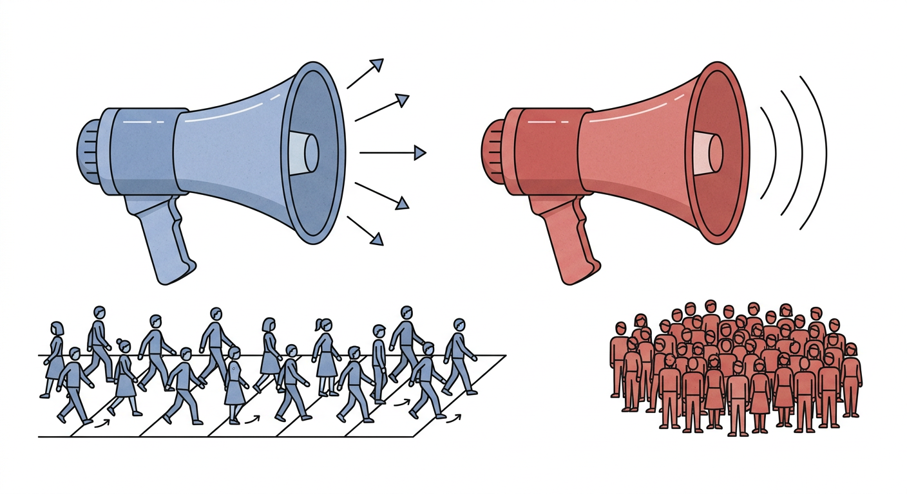

In April 2020 the citizens of democracies stayed away from shops, restaurants and cinemas at a rate of 75.6% below normal. The citizens of autocracies — operating, by reputation, under stricter and faster orders — stayed away at only 61.9% below normal. A gap of 13.7 percentage points, in the single category of activity most clearly tied to voluntary behaviour rather than state coercion.
The same pattern shows up everywhere Google was tracking. At workplaces democracies fell 14.7 points further; at parks 13.4 points; at grocery and pharmacy 8.1 points. The only place autocracies kept pace was transit stations, where the gap shrinks to 4.2 points — plausibly because shutting trains is something a state can do directly, without asking anyone to comply.
In the months before this data arrived, the dominant question in opinion pages was whether democracies could even mobilise the same societal effort as autocracies. By April, the answer had quietly turned out to be: not just yes, but more.
Three months. Five categories. The same gap.
The gap was not a one-week artefact. Across all five mobility categories, democracies cut movement by 13.0 points more than autocracies in March, 10.8 points more in April, and 11.0 points more in May. Both groups eased in late spring, but neither closed the gap.
Google's Community Mobility Reports — released in April 2020, drawing on aggregated location histories from Android phones — measure each day against a five-week baseline at the start of the year. The report covers six categories of place; the Economist analysed five (omitting "residential", which is mostly the inverse of the others). The full picture, month by month, category by category, is a near-monotonic story: democracies below autocracies, every cell.
Stricter laws are not the answer
You might expect the explanation to be straightforward: democracies wrote stricter laws, so their citizens moved less. Two facts make that story collapse.
The first: at the country level, democracies and autocracies wrote almost identical lockdown laws. Across 110 countries with full April 2020 data — 74 democracies, 36 non-democracies — the average Stringency Index was 79.3 in democracies and 80.6 in autocracies. On paper, democracies were less strict. In practice they had a workplace mobility drop of -48.1%, against -38.9% in autocracies — a 9.2-point gap moving the opposite direction to what the laws would predict.

The second: hold strictness constant and the gap survives. Among the 62 countries with the very harshest April policies (Stringency 80 or higher), democracies dropped workplace mobility 13.8 points further than non-democracies (-58.7% vs -44.9%). At any given level of legal severity, democratic publics complied more.
Every country, two numbers
Plot every country with full data and the cloud separates. Democracies cluster in the corner of high stringency and large mobility drops — Argentina (-53.1%), Bolivia (-74.7%), Ecuador (-74.9%), Spain (-68.6%), Italy (-63.9%). Autocracies with similar laws tend to land short: Egypt at -36.5%, Russia at -41.5%, Uganda at -27.6% despite a posted Stringency Index of 89.4.
The most interesting outlier is in the democracy set: Japan, with a stringency of 45.7 — well below the global average — yet a 21.9% drop in workplace mobility. Voluntary distancing, achieved without strict orders. Sweden too, at the low end of stringency (46.3) and the low end of mobility drop (-19.6%), arrived at a different equilibrium for different reasons.
Sixty years of epidemics tell the same story
The COVID-era picture isn't an accident of one virus. EM-DAT — the international disaster database run by CRED at UCLouvain, with criteria of ten or more deaths or a declared emergency — has logged 1,062 epidemics worldwide since 1960 in countries we can classify. Democracies experienced 394 of these and lost a median 34 people per outbreak. Autocracies experienced 668 and lost a median 45.5. Even with autocracies' notorious under-reporting biasing the comparison the other way, non-democracies still come out worse.
The historical pattern flipped sometime in the late twentieth century. In the 1980s — the era of military dictatorships in Latin America and one-party states in Africa — the median was actually higher in democracies, driven by particular outbreaks in India and Brazil. From the 1990s onward the picture inverts and stays inverted: in every decade since, autocracies have the higher median. The 2010s sit at 43 deaths per outbreak in autocracies, 27 in democracies.
Compliance, not coercion
The temptation in spring 2020 was to read the pandemic as a test of state capacity, where authoritarianism would win. The result was that the test ran on something else: how much trust there was between citizen and state, and how much voluntary co-operation a government could call on.
When the rules are roughly the same, the system that converts laws into behaviour better — wins. That, very awkwardly for the original framing, turns out to be the system where citizens get to argue with the rules in the first place.
None of this means democracies handled the pandemic well in absolute terms. Italy and the United States and the UK had catastrophic spring waves; the variation within each regime type was as wide as the gap between them. The argument is comparative, not exonerating.
What it does mean is that the question for the next pandemic isn't "should the rules be tougher?" — it's "will anyone listen?".
References & data
- The Economist, "Democracies contain epidemics most effectively" (Graphic Detail, 6 June 2020) — the original article and replication folder.
- Replication data and R script (TheEconomist/graphic-detail-data on GitHub).
- Google COVID-19 Community Mobility Reports — daily mobility change versus a 3 January – 6 February 2020 baseline. Discontinued October 2022.
- Oxford COVID-19 Government Response Tracker (OxCGRT), Blavatnik School of Government — composite Stringency Index.
- Boix-Miller-Rosato democracy v3.0 — binary democracy / non-democracy classification, 1800–2015.
- Polity IV and Freedom House — alternative regime measures used as robustness checks.
- EM-DAT, the International Disaster Database — CRED, UCLouvain.
- Maddison Project Database — long-run GDP per capita.
code/load_and_profile.py, code/mobility_by_regime.py, code/stringency_vs_mobility.py, code/historical_epidemics.py.